Patel Milmet Dam Failure
{kind=link}
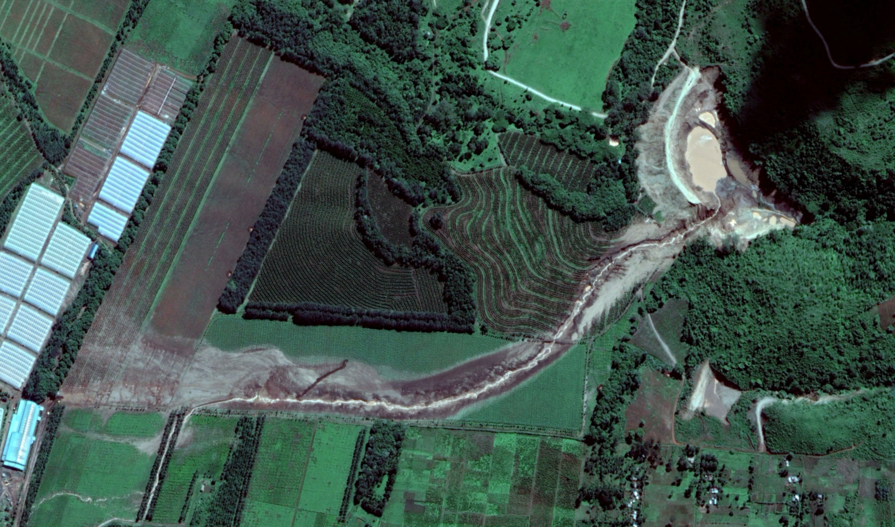
Disclaimer: This document is intended solely as a demonstration of the FLO-2D QGIS Plugin workflow for a dam-break modeling and flood inundation mapping. It is NOT a formal engineering investigation, calibrated hydraulic study, safety assessment, or forensic analysis of the Patel (Milmet) Dam failure. The modeling parameters presented are based on publicly available information and reasonable engineering assumptions for demonstration purposes only. The results should therefore be interpreted as an illustration of FLO-2D capabilities rather than reconstruction of the actual 2018 flood event or a basis for engineering or regulatory decision-making.
Background
The Patel Dam, also known as the Milmet Dam, was an earthen embankment reservoir located in Solai, Nakuru County, Kenya (Figure 1), on the privately owned Patel Coffee Estate.
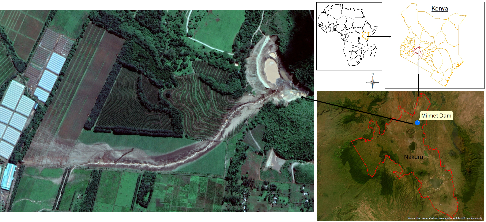
Figure 1. Study Area.
The estate covered approximately 3,500 acres and contained seven dams or water pans, namely Milmet Dam, Tinderess Dam, Moi Dam, Duck Dam, D.O Dam, Mini Moi Dam, and Pelican Water Pan (The Senate of Kenya, 2018). The Milmet was one of five earthen embankment dams on the property.
On 9 May 2018, the Milmet Dam failed catastrophically (Figure 2) after holding an estimated 200,000 m3 of water. Reports indicated that approximately 190,000 m3 of water was released, generating a destructive flood that swept through downstream communities. The disaster resulted in the loss of 48 lives and caused extensive damage to homes, infrastructure, farmland, and other property (KHRC, 2018).
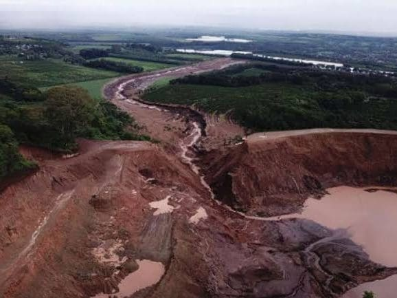
Figure 2. Milmet Dam Failure (Photo courtesy of Kenya’s Ministry of Interior and Coordination of National Government Multi-Agency Report 2018).
The breach runout as shown in Figure 3 extends downstream through farmland and villages for roughly 8 Km. Modeling dam breach scenarios such as this can help identify areas at risk from a potential dam failure. Predictions of flood extent, depth, velocity, and arrival time provide a basis for mapping hazard zones, assessing risks to downstream communities and agricultural lands, and identifying areas that may remain safe during a breach event.
{kind=link}
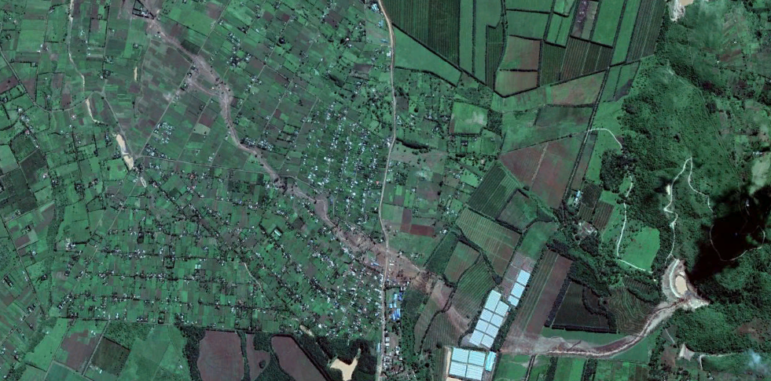
Figure 3. Post-Event Image (Source Google Earth).
This case study uses the documented characteristics of the Patel (Milmet) Dam failure as the basis for demonstrating the FLO-2D modeling workflow. The historical information presented in this section is drawn from published reports and literature. However, the hydraulic modelling presented later in this document is intended solely to demonstrate how FLO-2D can be used to simulate a dam-break scenario and map potential flood inundation.
Dam Characteristics and Breach Model Parameters
The FLO-2D dam breach model was based on documented information from the Patel (Milmet) Dam failure together with empirical breach relationships implemented in the FLO-2D Breach Hydrograph Tool. Wherever possible, documented dam characteristics were used as model inputs, while the remaining hydraulic parameters were estimated using the Breach Hydrograph Tool.
According to The Senate of Kenya (2018) investigations, the Patel (Milmet) Dam was an earthen embankment with an approximate wall height of 30 m and a total impounded water volume of 200,000 m3 at the time of failure. The investigation also identified piping (internal erosion) as the failure mechanism. Reports indicate that approximately 190,000 m3 of water was released during the breach, representing 95% of the total impounded volume.
The average breach opening was measured from the post-event Google Earth satellite imagery (12 May 2018) and found to be approximately 60 m. The remaining hydraulic parameters required to generate a breach hydrograph were estimated using the FLO-2D Breach Hydrograph Tool, a tool that uses historical dam break cases to estimate potential failures, released volume, breach hydrograph and more. A downstream baseflow of 0.0 m3/s was assumed for the simulation because no measured or pre-failure discharge was available. Although post-event investigations reported that the dam had exhibited leakage for several years before failure, the available reports do not quantify the leakage rate or the resulting downstream flow (KHRC, 2018). A peak discharge of 160 cms, time to peak of 25 minutes (0.417 hours), and an estimated hydrograph duration of approximately 2 hours were adopted to represent a reasonable breach scenario for the documented dam characteristics.
Using these inputs, the FLO-2D Breach Hydrograph Tool generated breach hydrograph with a total released volume of 191,988 m3, which closely matches the reported released volume.
Breach hydrograph parameters, including breach formation time, hydrograph shape, and peak discharge, can be calibrated using information from news reports, field observations, and witness accounts to better represent the observed flood runout. When such information is unavailable, a range of plausible breach scenarios can be simulated to evaluate the sensitivity of downstream flooding and provide a more comprehensive assessment of potential hazard and risk.
FLO-2D Breach Hydrograph Tool
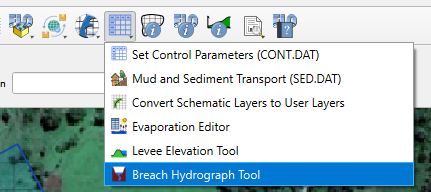
Figure 4. Breach Hydrograph Tool location in FLO-2D toolbar.
Water Dam Inputs
Dam Height = 30.00 m.
Total Impoundment Volume = 200,000.00 m³.
Failure Mechanism = Piping.
Baseflow = 0.00 cms.
Breach Parameters
Method = Froehlich (1995).
Peak discharge = 160 cms
Time to Peak = 0.417 hrs
Average Breadth Width = 60 m
Estimated hydrograph length = 2 hrs
Hydrograph Generation
Parabolic – Barfield (1981)
See Figure 5 for configuration of these parameters and the resulting hydrograph.
{kind=link}
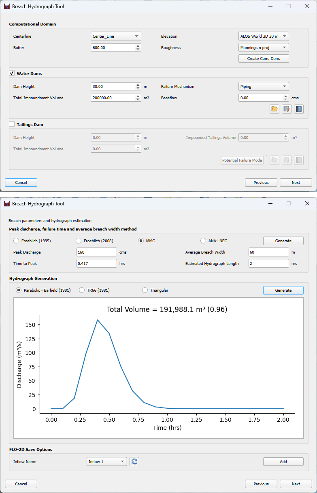
Figure 5. Breach Hydrograph Tool.
FLO-2D Model Configuration
The model domain (Figure 6) for this case study is limited to 4.7 Km downstream of the dam. This was to limit the workflow for a simple case study. The model domain uses a 30 m grid cell size, Advanced Land Observing Satellite (ALOS) World 3D elevation data. European Space Agency (ESA) Land Cover data was used to develop Manning’s roughness values. Because the AW3D30 dataset is a digital surface model and did not fully capture the observed drainage conveyance, localized terrain refinements were applied to better represent the floodway and improve agreement between the simulated breach runout and the flood extent interpreted from post-event aerial imagery. Appropriate inflow and outflow boundary conditions were established prior to model execution to introduce the Breach Flow to the upstream boundary and release the normal depth flow at the downstream boundary.
{kind=link}
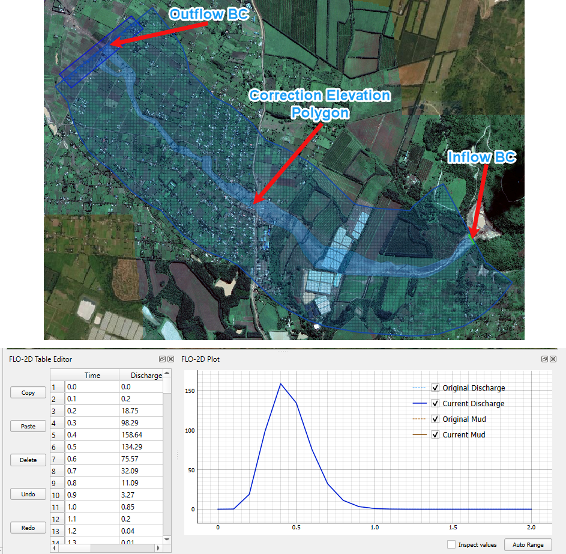
Figure 6. Dam Breach Domain and Upstream Breach Hydrograph.
Results
Selected Flood Maps
Maximum Flood Depth
{kind=link}
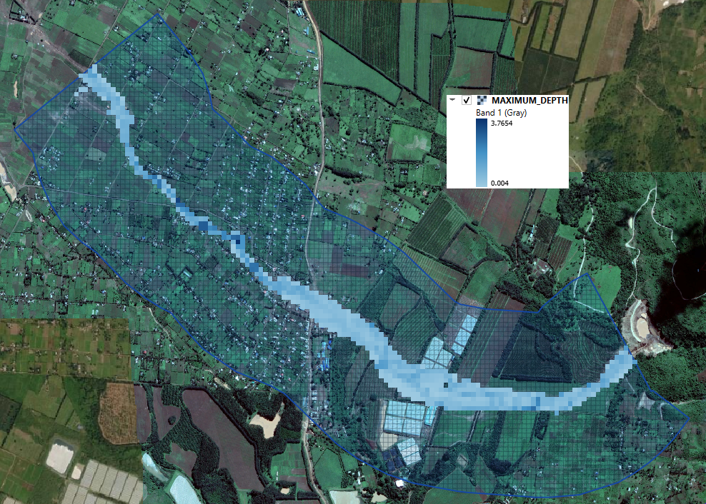
Figure 7: Maximum Depth
Maximum flood depth shows the greatest depth of flooding reached at each grid pixel (Figure 7) during the event. It can use to identify areas at the highest risk of inundation, assess potential impacts on people, buildings, infrastructure, and agriculture, and support flood hazard mapping. In this demonstration, the maximum flood depth map provides a clear representation of the simulated flood extent and highlights the areas expected to experience the deepest flooding following the dam failure scenario.
Maximum Velocity
{kind=link}
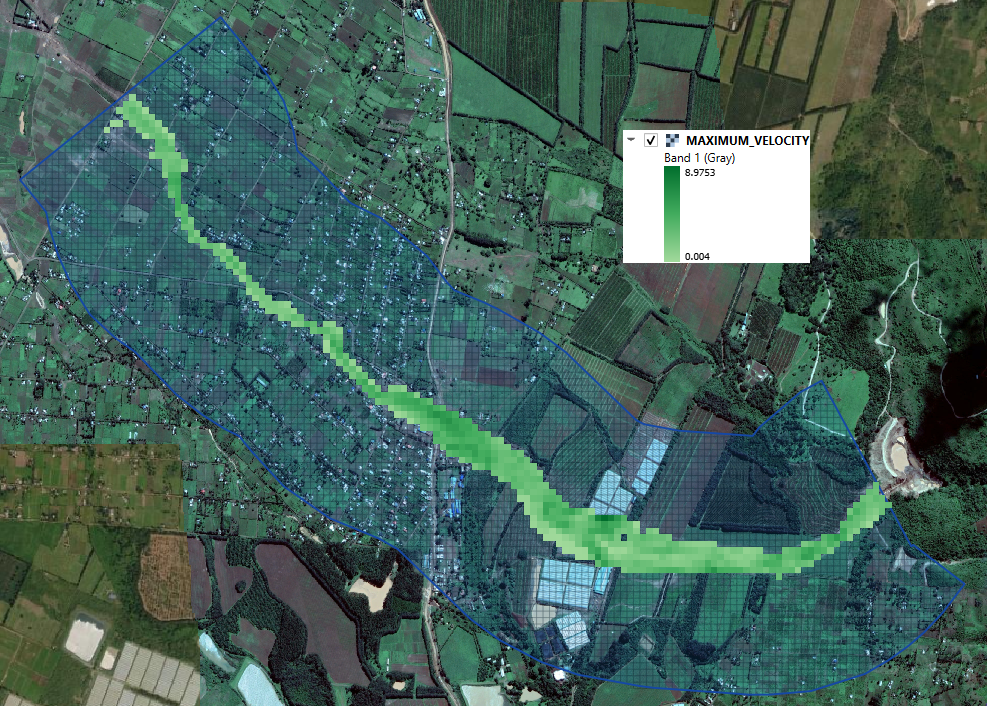
Figure 8: Maximum Velocity
Maximum velocity shows the highest flow velocity reached at each grid pixel during the event (Figure 8). Flow velocity is a key indicator of the destructive power of floodwaters, as high-velocity flows can erode riverbanks, damage buildings, undermine roads and bridges, and transport debris over long distances. Maximum velocity maps help identify areas where floodwater pose the greatest risk to people and infrastructure and provide valuable information for flood hazard assessment.
Maximum Velocity Vectors
{kind=link}
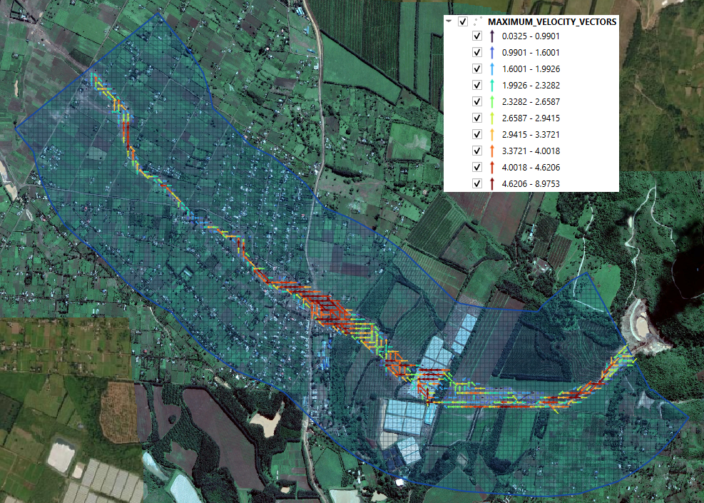
Figure 9: Maximum Velocity Vectors
Maximum velocity vectors provide information on both the magnitude and direction of flood flows during the simulation. Unlike the maximum velocity map, which only shows how fast the water is moving, velocity vectors illustrate the direction of flow as it propagates across the floodplain (Figure 9). This information is useful for understanding flood routing, identifying the main flow paths, and assessing areas that are likely to experience strong hydraulic forces, erosion, or debris transport. Velocity vector maps can also support the design of flood mitigation measures, such as the placement of levees, culverts, and flood protection structures, by showing how floodwaters interact with the surrounding terrain.
Selected Hazard Maps
Australian Rainfall and Runoff (ARR)
{kind=link}
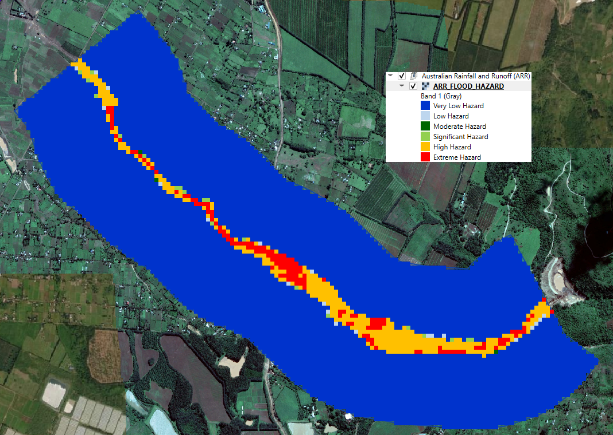
Figure 10: ARR Flood Hazard
Flood hazard maps (Figure 10) combine flood depth and flow velocity to classify the severity of flood conditions and identify areas where floodwaters are most likely to pose a risk to people, infrastructure, and property. Unlike individual depth or velocity maps, hazard maps provide an overall indication of flood danger by categorizing inundated areas into hazard classes ranging from very low to extreme. These maps are valuable for emergency response planning, evacuation planning, land-use planning, and the design of flood mitigation measures. In this demonstration, the Australian Rainfall and Runoff (ARR) flood hazard classification was used to identify the spatial distribution of flood hazard resulting from the simulated dam-break scenario. The highest hazard levels are concentrated along the main flood path, where greater flood depths and higher flow velocities combine to produce the most hazardous conditions, while hazard levels decrease away from the main flow corridor.
Floodplain Cross-Section Measurements
The cross sections are used to compute hydrographs for flow crossing a line of cells, including floodplain, channel and street flow elements. Four floodplain cross sections (Figure 11) were used in this project area to help define the floodwave arrival time. It should be noted that floodwave arrival times are highly sensitive to breach formation time, release volume, and the resulting breach hydrograph. Whenever possible, these parameters should be calibrated using documented observations, witness statements, or post-event investigations. In the absence of reliable observations, multiple simulations with varying breach parameters should be evaluated to characterize the range of potential downstream impacts and arrival times.
{kind=link}
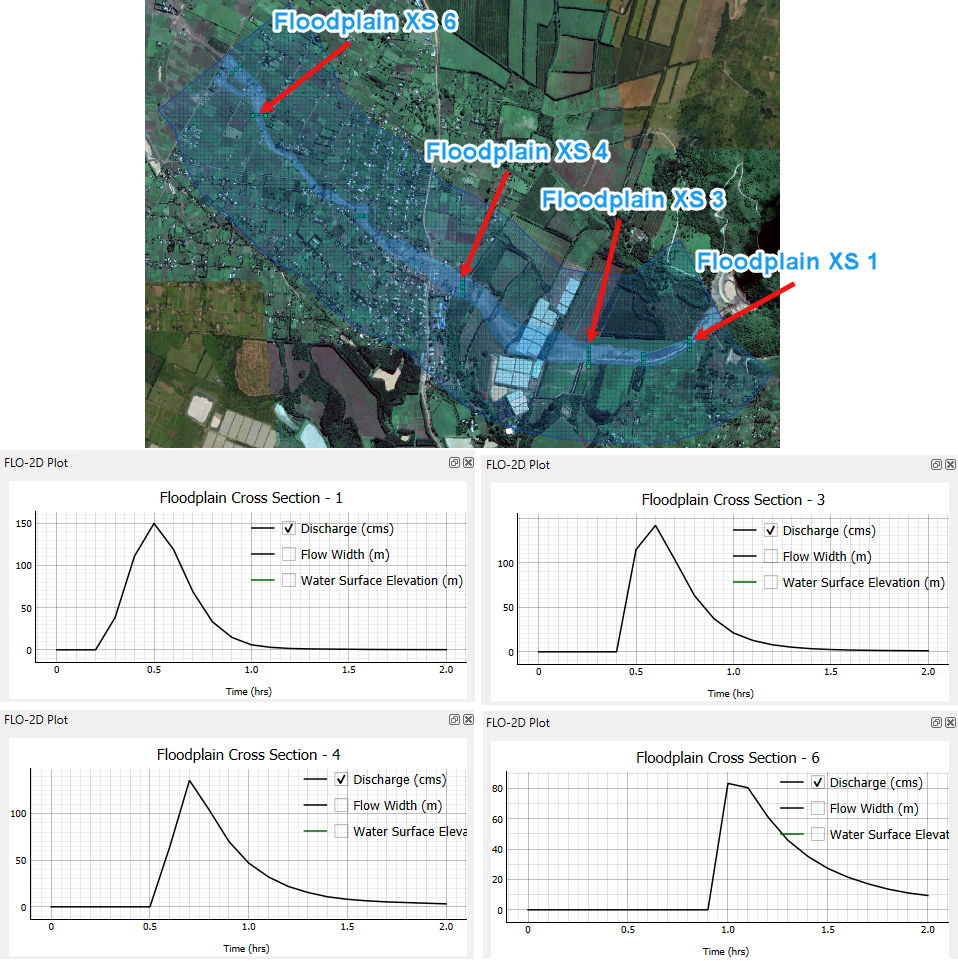
Figure 11: Floodplain Cross-Section measurements at select locations
References
KHRC (2018, May 28). Solai Dam Tragedy. Kenya Human Rights Commission (KHRC). https://khrc.or.ke/press-release/solai-dam-tragedy/
Ramya, M. N. S., Sivasankar, T., Ghosh, S., & Rao, G. V. (2021). A remote sensing and GIS approach toward the analysis of Patel Milmet Dam Burst, Kenya. In Earth and environmental sciences library (pp. 265–274). https://doi.org/10.1007/978-3-030-76116-5_16
The Senate of Kenya. (2018). Report of the Select Committee on the Solai Dam tragedy. https://www.parliament.go.ke/sites/default/files/2022-08/Report%20of%20Selected%20Committee%20on%20the%20Solai%20Dam%20Tragedy.pdf